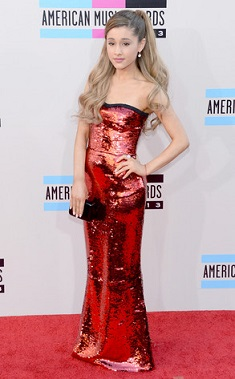
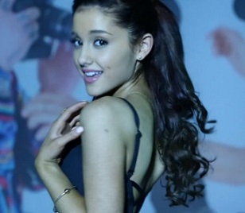

|
|

|

|

|

|
2012-2014: Carrera musical y reconocimiento mundial.
|
|
Grande grabó su primer álbum de estudio, Yours Truly, durante tres años. Luego de completar el
álbum, originalmente llamado Daydreamin, fue publicado el 17 de noviembre de 2012 Yours Truly debutó en la primera posición en Billboard 200
, con ventas superiores a 138 000 copias en su primera semana.Tras el éxito del álbum, Grande se convirtió en dicho añi en la primera artista
femenina en debutar con un álbum debut en la posición número uno en el Billboard 200 desde 2009. Esto, convirtió a Grande en la decimoquinta artista femenina en la historia de la industria
musical en lograrlo.
El 26 de marzo del año siguiente, publicó el primer sencillo de su álbum debut, titulado «The Way»
con la colaboración del rapero Mac Miller.La canción alcanzó la novena posición del conteo Billboard
Hot. «The Way» fue certificado con múltiples discos de platino en Estados Unidos
e ingreso en diversas listas de diversas otras partes del mundo, y se convirtió
en el primer éxito de Grande. Eventualmente, fue demandada por Minder Music
por un presunto plagio de la letra «What we gotta do right here is go back, back in time»,
de la canción de 1972 «Troglodyte (Cave Man)»
por The Jimmy Castor Bunch
.El segundo sencillo del álbum fue
«Baby I»
, publicado el 22 de julio de 2013, y se posicionó en la vigésima primera posición en la lista de éxitos de la
Hot 100
. Adicionalmente la canción se ubicó en la sexta posición de
Digital Songs
, logrando convertirse en la única artista fememnina en conseguir dos canciones top 10 en mencionada lista durante el 2013.El tercer sencillo,
«Right There»
con la colaboración del rapero
Big Sean
,
debutó en la posición 84 en la lista Billboard Hot 100.
|

|
|

|
El 25 de agosto de 2013, Grande hizo su presentación debut en los MTV Video Music Awards 2013
interpretando sus canciones «Baby I» y «The Way» en la previa de la ceremonia.
La lista Billboard 21 Under 21: Music's Hottest Minors 2013
, ubicó a Grande en la cuarta posición, con la descrpción de ser la cuarta artista menor de 21 años más atractiva del año 2013. El 24 de
noviembre, Grande se presentó en los AMAs 2014 donde interpretó la canción
«Tattoed Heart» de su primer álbum de estudio, Yours Truly. donde fue galardonada «mejor nuevo artista del año»,y fue la
artista más mencionada en Twitter, superando a Miley Cyrus, Niall Horan y
Harry Styles de One Direction
Precediendo su primer EP, La lista Christmas Kisses
, Grande estuvo en una serie de eventos, incluyendo presentaciones en el anual de acción de gracias en Nueva York
, como "87th Annual Macy's Thanksgiving
Day Parade".en el evento "New York's Rockefeller Center Christmas Tree", en "KIIS-FM Jingle Ball" en Los Ángeles
, en el evento "Z100's Jingle Ball en el Madison
quare Garden", y más...
El 31 de diciembre hizo una presentación en el evento de año nuevo, "Dick Clark's New Year's Rockin' Eve", en donde interpretó sus canciones "The Way" junto a
Mac Miller y "Right There" junto a Big Sean.
|
|